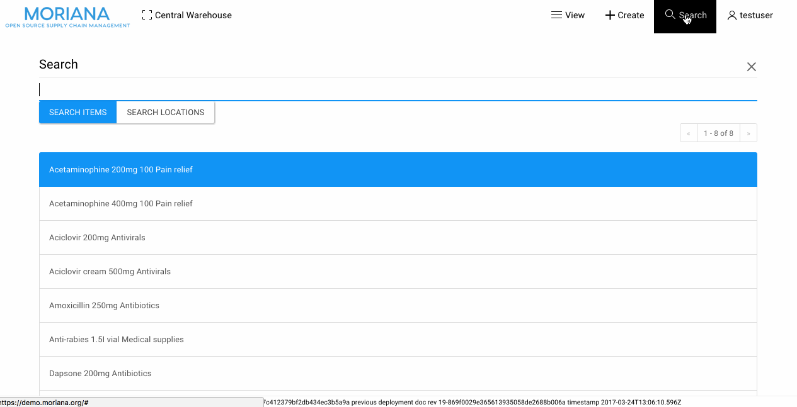

Web-based software for healthcare supply chain management. Designed for facilites with low network availability. Free and Open Source.
View project on githubFeatures
Shipments
Receive and transfer stock between suppliers, facilities, and patients.
Inventory
Manage stock levels at the item batch level, monitoring average monthly consumption, expiring items, and out of stock. Transfer and dispense FEFO.
Offline
Work offline or online, with the same application deployed across servers and laptops. If an offline-enabled user losses internet, work can continue locally until connectivity is restored, syncing automatically.
Roles
Create individual databases for each facility, transferring stock between & managing staff access on a per-location basis. Staff working offline synchronize only the facilities and data they need.